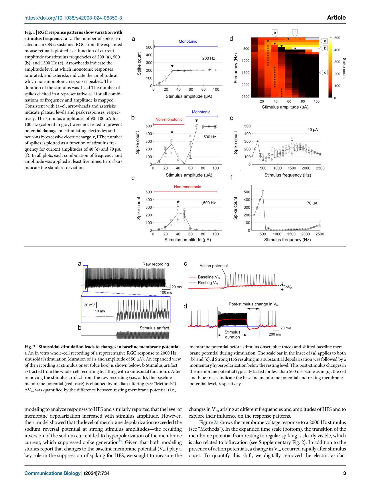
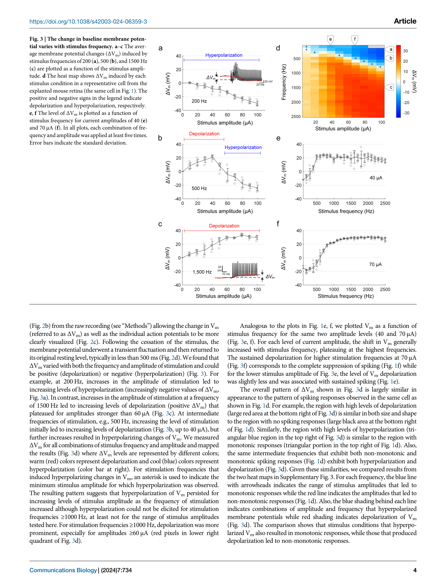
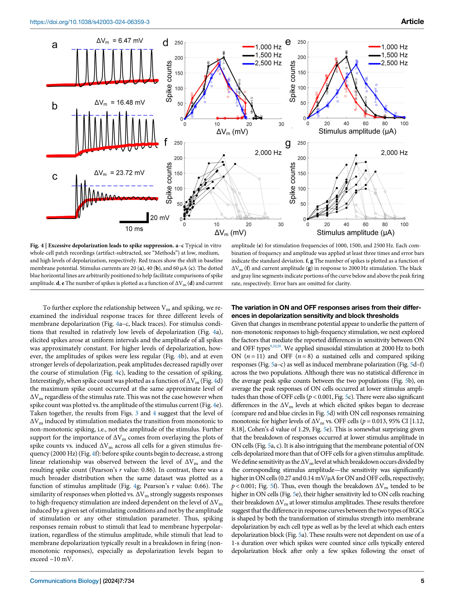
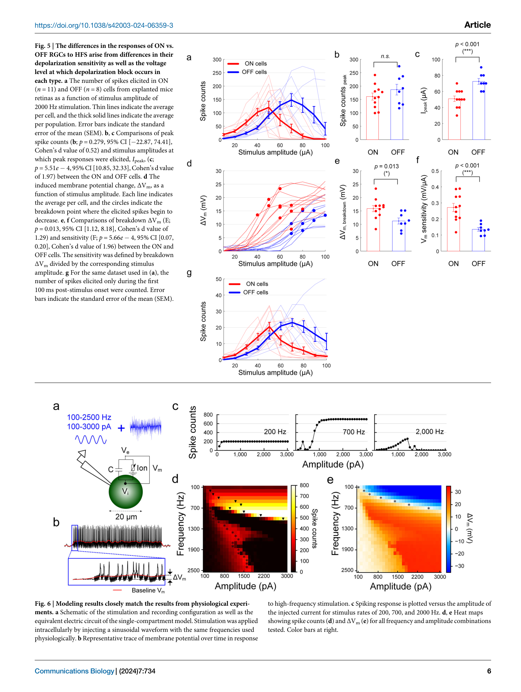
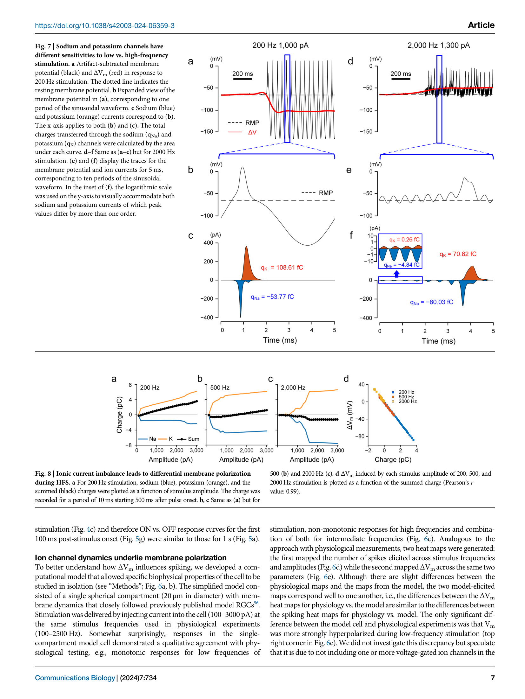
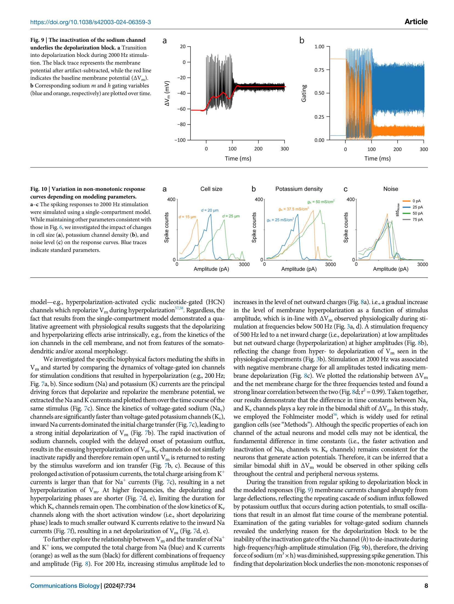

论文精读说明文档
Membrane Depolarization Mediates Both the Inhibition of Neural Activity and Cell-Type-Differences in Response to High-Frequency Stimulation
高频电刺激（HFS）如何抑制神经元放电——膜电位直接测量给出一锤定音的答案。
论文信息
一句话定位
这篇文章直接测量了高频电刺激（HFS，high-frequency stimulation，>1 kHz）期间神经元的膜电位偏移（ΔVm），证明 HFS 抑制放电的根本机制是过度去极化导致的 Na 通道失活——即去极化阻滞（depolarization block）——而不是超极化，并揭示 ON/OFF 两类视网膜神经节细胞对 HFS 反应差异背后的双因素竞争机制。
为什么值得读
高频电刺激在临床上有重要应用：kHz 频率脊髓刺激用于疼痛管理，视网膜假体选择性激活不同细胞类型，迷走神经阻断治疗肥胖。HFS 有一个独特能力：它能在异质神经元群体中差异化地抑制特定细胞类型，这为精细调控提供了空间。
但 HFS 的抑制机制长期没有直接证据。建模研究（Kameneva 2016 vs Guo 2019）给出了互相矛盾的结论——去极化阻滞还是超极化？无法裁判，因为 HFS 产生的刺激伪迹（stimulus artifact）极其严重：每秒上千个脉冲连续叠加，传统电生理几乎不可能在刺激期间测到真实膜电位。
Lee 等人的策略是：选择正弦波刺激（频谱集中在单一频率，便于拟合），再用正弦拟合减法从全细胞记录中剥离伪迹，首次直接获得刺激期间的 ΔVm。这既是结论，也是方法论的一个重要案例——伪迹处理方式的选择框定了你能问什么科学问题。
术语先说明
图文导读






机制横向对照
ON 和 OFF α sustained RGC 对 HFS 的响应差异可分解为两个独立维度：
| 维度 | ON α sustained RGC | OFF α sustained RGC | 机制解释 |
|---|---|---|---|
| 去极化敏感性（mV/μA） | 0.27 | 0.14 | 相同电流下 ON 细胞产生约两倍的 ΔVm；可能与胞体大小、形态、膜阻抗差异相关 |
| Block 阈值（ΔVm，mV） | 15.9 ± 3.9 | 11.2 ± 3.2 | ON 细胞需要更大的去极化才能触发 depolarization block；模型提示 K 通道密度差异可解释 |
| Block 触发的电流阈值 | 更低（更容易被 HFS 抑制） | 更高（相对抵抗） | 敏感性主导：高敏感性压倒高 block 阈值；净结果是 ON 细胞在更低幅度下进入 block |
| 低频响应（<500 Hz） | 两者均为单调型（monotonic）；低幅度时无明显 ΔVm | 低频下 K+ 外流占优，不产生显著去极化；抑制机制不适用 | |
| 高频响应（>1000 Hz） | 非单调型，峰值放电出现在更低幅度 | 非单调型，峰值放电出现在更高幅度 | 高频下 Na+ 内流占优，去极化 → depolarization block；两类细胞均可被 HFS 抑制，但阈值不同 |
和你的研究怎么接上
1. HFS 伪迹与真实膜响应的区分——方法论上的直接对比
Lee 与你处理的是完全相同的核心难题：胞外电刺激在记录电极上叠加的伪迹远大于真实膜电位信号，如何分离？Lee 的策略是正弦拟合减法：拟合与刺激同频的正弦函数，从原始记录中减去，再用 40 ms 中值滤波提取缓慢的 ΔVm。这个策略的边界条件非常明确：只适用于正弦波刺激（频谱集中），只能看慢变化（40 ms 滤波窗口割掉了所有快于 ~25 Hz 的 Vm 动态），并且会把与刺激同频的真实跨膜电流成分（容性电流 IC = Cm · dVm/dt 驱动的部分）一起减掉。
你的差分测量方法（Vm = Vi − Ve，分别记录胞内和胞外电位再逐时间点差分）在每一个维度上都放宽了这些限制：适用于任意波形（临床相关的双相矩形脉冲、单相脉冲串），保留完整时间分辨率（μs 级），正确区分 Ve 和真实 Vm 而不做函数形假设。在 TIM 论文的 Discussion 中，Lee 2024 是最应该引用的"同类方法对比文献"。
2. 去极化阻滞如何被电极记录扭曲
Lee 发现 depolarization block 的触发 ΔVm 阈值约为 10–16 mV。这个数值依赖于伪迹去除的精度——如果残余伪迹被误读为膜电位变化，阈值估计就会有系统偏差。Lee 的正弦拟合减法假设胞外电位 Ve 是完美正弦波，但实际上 Ve 经过组织传播后可能有畸变（相位漂移、幅度衰减的频率依赖性），残余伪迹不可忽略。你的方法通过直接测量 Ve(t)（不假设其函数形式），理论上可以给出更准确的 ΔVm 估计，从而更精确地定位 block 阈值。
3. 差分测量在 HFS 下的挑战与 Lee 方法的互补关系
两种方法面对的 HFS 伪迹有本质区别。Lee 的正弦刺激是单频，伪迹集中在一个频率，减法非常干净。你的差分测量面向双相矩形脉冲：频谱包含基频及大量谐波，共模伪迹的频谱更宽，对差分电极的共模抑制比（CMRR）要求更高。Lee 的论文等于提供了一个"简单伪迹场景下的标杆结果"——如果用你的差分方法在正弦波 HFS 条件下重做 Lee 的实验，并与 Lee 的结果对比，就能定量评估两种方法的系统误差，这本身就是一个有价值的方法验证实验。
4. Na/K 时间常数机制与等效电路模型的互补
Lee 的计算模型揭示的频率依赖极性反转，本质上是主动离子通道的频率滤波特性：Na 通道是"快速"高通滤波元件，K 通道是"慢速"低通滤波元件，两者叠加产生的净离子电流方向随频率翻转。这与你的等效电路框架（Rs, Cm, Rm 的被动 RC 滤波）形成两层互补——被动层决定 Vm 对 Ve 的跟随程度，主动层决定 Vm 偏移的方向和幅度。两层模型拼在一起，才是 HFS 下膜电位响应的完整图像。
证据链和局限
证据链的强处：
- 首次直接测量刺激期间的 ΔVm。 之前关于 HFS 机制的争论完全基于模型。Lee 用全细胞膜片钳在刺激期间直接测 ΔVm，提供了一锤定音的生理学证据，方法链完整可追溯。
- 完整的参数空间覆盖。 频率 100–2500 Hz × 幅度 10–100 μA 系统扫描，结论不依赖于某几个特定条件点。
- ΔVm 作为统一框架。 不同频率的放电数据在 ΔVm 坐标下汇合（Fig. 4），r = 0.86 vs 0.66，优雅地统一了看似复杂的频率依赖响应。
- 实验 + 建模双轨互相验证。 Fohlmeister 模型的定量预测与生理数据定性一致，Na/K 时间常数差异假说可测试、可反驳。
- 开放数据与代码。 OSF 公开全部源数据和计算模型，可再现性高。
局限：
- 正弦拟合减法的固有误差。 假设 Ve 是完美正弦波，但实际 Ve 可能有畸变；与刺激同频的真实跨膜电流成分被一起减掉；40 ms 中值滤波损失了快速 Vm 动态。这些局限使 ΔVm 的绝对值估计存在系统偏差，block 阈值（10–16 mV）需要在更精确的测量下重新核实。
- 只测试正弦波刺激。 临床 HFS 常用双相矩形脉冲（包含多次谐波），正弦波与矩形脉冲的频谱差异显著，响应可能不完全相同。作者选择正弦波的直接动机是伪迹去除方便，而非临床相关性。
- 离体视网膜外推局限。 RGC 的离子通道组成与皮层、脊髓或海马神经元不同；Na/K 时间常数差异介导的极性反转是否在其他神经元类型中定量相似，仍需直接验证。
- 单隔室模型忽略空间电场分布。 用胞内电流注入模拟胞外刺激，忽略了真实电场在胞体—树突—轴突上的空间异质性。这正是 3D 点电流源模型（和差分测量中 Ve 的显式测量）可以补充的地方。
- 样本量有限。 ON 11 个细胞，OFF 8 个细胞，统计显著但细胞间变异估计可能不充分。
建议阅读顺序
- 先看 Fig. 3 的 ΔVm 热图和 Fig. 1 的放电热图并排对比，直接感受两张图的结构对应关系——这是全文核心结论的图像化表达。
- 再读 Introduction，了解 Kameneva 2016 和 Guo 2019 的建模争论背景，理解为什么直接测量 ΔVm 是一个有意义的贡献。
- 读 Fig. 2 和 Methods 中的伪迹去除部分，仔细阅读正弦拟合减法的描述，以及作者对其局限性的讨论（这是方法论对比的关键）。
- 读 Fig. 4，理解 ΔVm 作为统一预测变量的论证逻辑（坐标轴替换实验）。
- 读 Fig. 5，理解 ON/OFF 差异的双因素竞争机制（敏感性 vs block 阈值）。
- 最后看 Figs. 6–10 的计算模型部分，重点看 Na/K 时间常数差异图（Fig. 7）和参数扫描图（Fig. 10）。